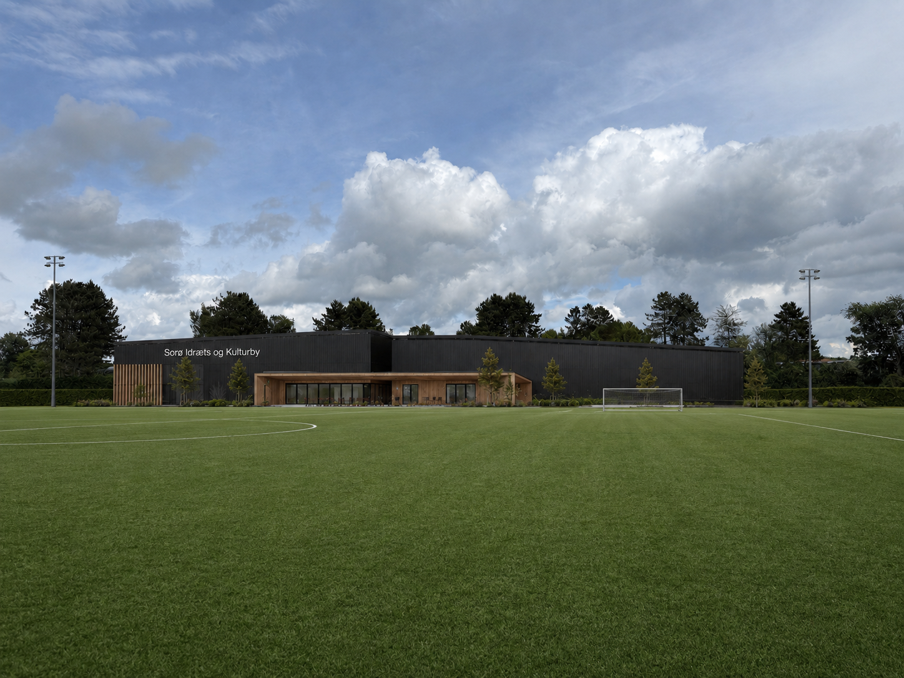
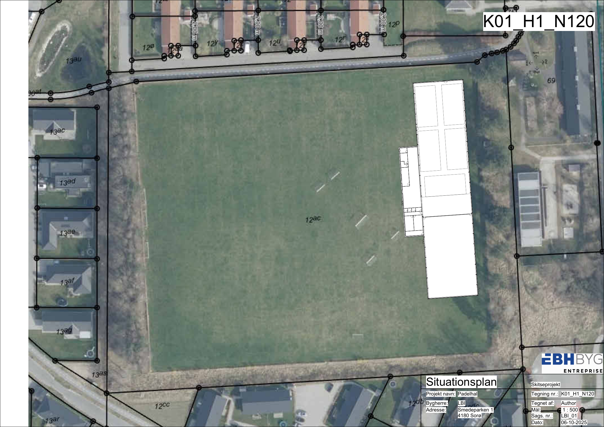
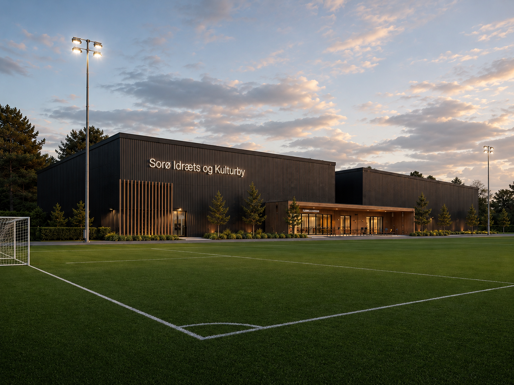

Et fristed til idræt, motion og fællesskab
Frivillige, foreninger og Sorø Kommune går sammen om to haller og et klub- og kulturhus i Dyhr Park. Vi vil skabe flere idræts- og kulturfaciliteter for alle.
Hvorfor, og hvorfor nu?
Sorø vokser, og borgerne er allerede idrætsaktive. Nu løfter frivillige, sportsklubber, politikere og Sorø Kommune faciliteterne i flok.
Næsten 3.000 m² under ét tag
Sorø Idræts- & Kulturby er startet af frivillige ildsjæle i LBI og udvikles i fællesskab med Sorø Kommune og byens klubber. Non-profit og foreningsdrevet.
Aktiverer seniorer i dagtimerne
Aktive fællesskaber midt på dagen, når hallerne ellers står tomme. Motion, samvær og kultur for kommunens ældre.
Et trygt fristed for børn og unge
Multisport i hverdagen, dans og steder at være efter skole. Et ungemiljø, der bygger på bevægelse og fællesskab.
Samler foreninger og kulturliv
Foreningsfitness, kulturhus og fleksible faciliteter, der giver eksisterende og nye foreninger et fælles hjem.

Ét samlet anlæg, tre dele
- Sportshal, 1.551 m²: 4 padelbaner med plads til en femte, lounge på 240 m² og foreningsfitness
- Multihal, 980 m²: fleksibel hal op til håndboldbanestørrelse
- Klub- og kulturhus, 400 m²: café, mødelokaler og omklædning
Dyhr Park: midt i den voksende bydel
Anlægget placeres langs den østlige kant af Dyhr Park ved Smedeparken. Placeringen er valgt med omhu:
- De to eksisterende 11-mandsbaner bevares fuldt ud.
- En fremtidig udvidelse af skolen berøres ikke.
- Tæt på boligerne i Frederiksberg bydel, hvor væksten sker.

En dag i idræts- og kulturbyen
Huset er tegnet ud fra ét spørgsmål: Hvad har borgerne i Sorø brug for? Sådan kan en helt almindelig tirsdag se ud.
Formiddag og middag
Seniorpadel og formiddagsfitness. Gåklubben slutter med kaffe i caféen. Balletforeningen øver i multihallen, og hjemmepassergruppen mødes i kulturhuset.
Eftermiddag
Skolen ringer ud, og hallerne fyldes: multisport for de 10 til 15-årige, dans for pigerne, klatring og lektiecafé i klubhuset.
Aften
Padelbanerne er fyldt med familier og motionister. Foreningsfitness kører, håndboldtræning i multihallen, og mødelokalet er booket af lokalrådet.

Projektet er godt på vej
- Projektøkonomien er på plads: Budgettet er kvalificeret af vores arkitekt, og byggeriet forberedes til udbud.
- Dialogen med Sorø Kommune er i gang om samarbejdsmodel, finansiering & lokalplan.
- Fondsdialog & sponsorater forberedes, bl.a. med Lokale og Anlægsfonden.
- Projektet er tegnet og prissat til Dyhr Park: alle fodboldbaner bevares, og der er plads til at udvide, når behovet vokser.
Presset på pladserne er her allerede
"Da vi åbnede for tilmelding i august, var efterspørgslen så stor, at medlemssystemet gik ned. Alligevel måtte vi skuffe en del forældre. Pladsen er der simpelthen ikke."
"Fra september til april må op mod 400 padelmedlemmer køre til Slagelse flere gange om ugen for at spille."
Vil du være med?
Er du borger, forening, fond eller interessent, der vil bakke op om Sorø Idræts- & Kulturby? Vi vil meget gerne høre fra dig.